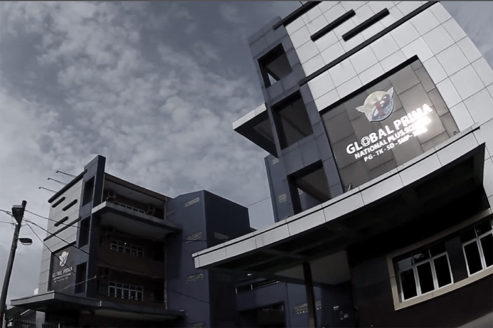
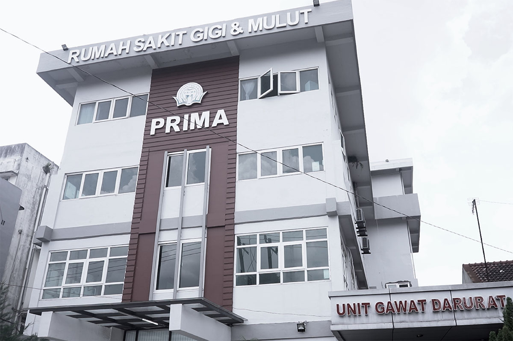
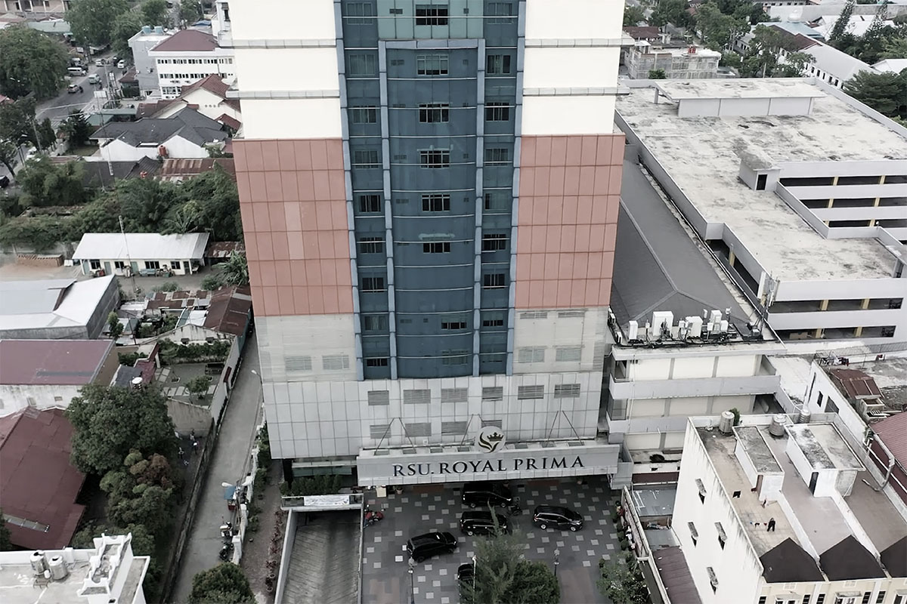
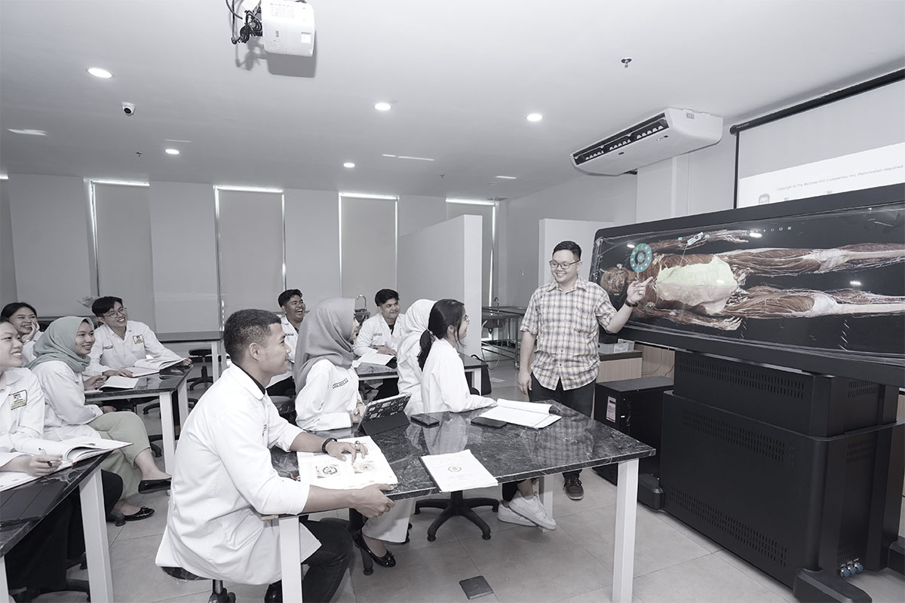
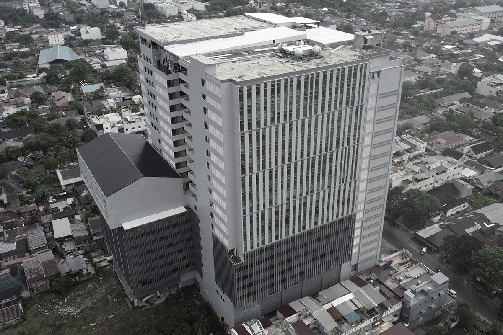

Sejarah UNPRI
Ringkasan Singkat Universitas Prima Indonesia (UNPRI)
Sejak 13 Oktober 2005, UNPRI tumbuh sebagai universitas multikultural, inklusif, dan progresif, terus memperluas program, fasilitas, serta ekosistem pendidikan-kesehatan untuk mendukung pembelajaran, riset, dan kolaborasi.
2005
Pendirian Universitas Prima Indonesia sebagai universitas multikultural, inklusif, dan progresif.
- 13 Oktober 2005 — UNPRI resmi berdiri berdasarkan Izin Menteri Pendidikan Nasional No. 151/D/0/2005.
- Pada masa awal, UNPRI membuka 12 program studi sebagai komitmen memajukan pendidikan tinggi di Indonesia;
-
S1 Kesehatan Masyarakat D3 Keperawatan S1 Ilmu Keperawatan S1 Teknik Informatika S1 Sistem Informasi S1 Teknik Industri S1 Teknik Elektro D3 Keuangan dan Perbankan S1 Manajemen S1 Akuntansi S1 Agroteknologi S1 Agribisnis
- Pendidikan berkembang dari bidang kesehatan, teknologi, teknik, bisnis, hingga pertanian.

13 Oktober 2005,
"Awal Perjalanan UNPRI"

Perjalanan UNPRI dimulai dengan komitmen untuk membangun pendidikan tinggi yang inklusif dan memberikan kontribusi nyata bagi masyarakat.
Universitas Prima Indonesia
Perjalanan Awal UNPRI

Pembangunan Kampus Pertama
Pembangunan dan pengembangan kampus pertama menjadi fase penting dalam pertumbuhan awal UNPRI, termasuk fasilitas akademik dan olahraga.
Program Studi Baru
UNPRI memperluas bidang akademik dengan membuka beberapa program studi baru.
2006 - 2009
2006–2009, "Pembangunan & Pengembangan"
Pembangunan kampus pertama menjadi fondasi pengembangan fasilitas akademik dan pertumbuhan program studi UNPRI.
Program Studi yang baru ;
2010 - 2014
2010–2014, "Ekspansi Infrastruktur & Kesehatan"
UNPRI memperluas infrastruktur akademik dan mulai memperkuat ekosistem rumah sakit pendidikan untuk mendukung pendidikan klinik.
-
2010 — UNPRI mendirikan gedung kampus baru di Jalan Brigjen Katamso


-
2012 — UNPRI mendirikan Rumah Sakit Gigi dan Mulut Prima
Pengembangan Rumah Sakit Pendidikan
sebagai rumah sakit pendidikan untuk mendukung pembelajaran klinik dan pelatihan program kesehatan. Pada tahun ini, UNPRI juga membuka:

-
2013–2014 — Berdirinya RS Royal Prima Medan
Berdirinya RS Royal Prima Medan
Berdirinya RS Royal Prima Medan menjadi tonggak penting, berkembang sebagai rumah sakit rujukan dan wahana pendidikan klinik bagi mahasiswa kedokteran dan profesi kesehatan lainnya. UNPRI juga menghadirkan Program Profesi Dokter dengan dukungan rumah sakit pendidikan milik universitas yang terintegrasi.

Penguatan Pascasarjana
UNPRI memperkuat pendidikan tinggi melalui pengembangan berbagai program pascasarjana, lintas disiplin, serta pembangunan fasilitas kampus utama.
Program Pascasarjana
Pengembangan program magister dan doktoral menjadi bagian penting dalam memperluas bidang akademik UNPRI.
Program Magister
Lintas Disiplin
Program Doktor
Ilmu Kedokteran
2016 - 2019
2016–2019, "Penguatan Pascasarjana & Pengembangan Program Strategis"
Periode ini menjadi fase penguatan akademik UNPRI melalui pengembangan pendidikan pascasarjana, pembangunan Kampus Utama, serta pembukaan berbagai program strategis di bidang kesehatan dan profesional.
Tonggak Perkembangan
2016 · Penguatan Program Pascasarjana
Empat program magister diluncurkan untuk memperkuat kualitas pendidikan tinggi dan pengembangan lintas disiplin.
2017 · Diversifikasi Pascasarjana & Kampus Utama
UNPRI memperluas pendidikan pascasarjana sekaligus memulai pembangunan Kampus Utama dengan fasilitas berstandar internasional.
2018 · Program Strategis Bidang Kesehatan
Lima program strategis diluncurkan untuk memperkuat bidang kesehatan dan menjawab kebutuhan pendidikan profesional.
2019 · Inisiatif Ilmiah & Profesional
UNPRI meluncurkan program akademik baru untuk menjawab kebutuhan ilmiah dan profesional yang semakin berkembang.
2020
Pencapaian Akreditasi "A" Pertama
UNPRI meraih akreditasi "A" pertama sebagai langkah historis dalam penguatan mutu akademik dan pendidikan tinggi.
-
Akreditasi "A" untuk S1 Pendidikan Dokter dan Program Profesi Dokter.
-
UNPRI membuka Program Doktor Manajemen untuk memperkuat pendidikan jenjang doktoral.
2020,
"Penguatan Mutu Akademik"
Pencapaian akreditasi "A" menjadi tonggak penting dalam perjalanan UNPRI untuk memperkuat mutu pendidikan dan keunggulan akademik.
Pencapaian Akademik UNPRI
Pencapaian Utama

Kampus Utama
Kampus Utama menjadi pusat pengembangan pendidikan, riset, dan kolaborasi dengan fasilitas modern yang terintegrasi.
Lantai Gedung
Standar Fasilitas
2021
2021, "Kampus Utama: Pendidikan, Riset & Kolaborasi"
UNPRI meresmikan Kampus Utama sebagai pusat pengembangan akademik modern dengan fasilitas terintegrasi dan berstandar internasional.
Fasilitas Utama
Program Studi Baru
Lokasi Kampus
UNPRI terus bertumbuh dengan ekosistem pembelajaran terintegrasi yang didukung fasilitas modern dan jaringan rumah sakit pendidikan di berbagai wilayah.
Kampus Utama
Jalan Sampul Ayahanda No. 3, Sei Putih Barat, Medan Petisah, Medan, Sumatera Utara 20118
Kampus Cabang Pekanbaru
Pengembangan jaringan pendidikan UNPRI melalui berbagai program akademik dan kesehatan.